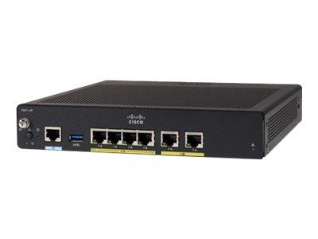
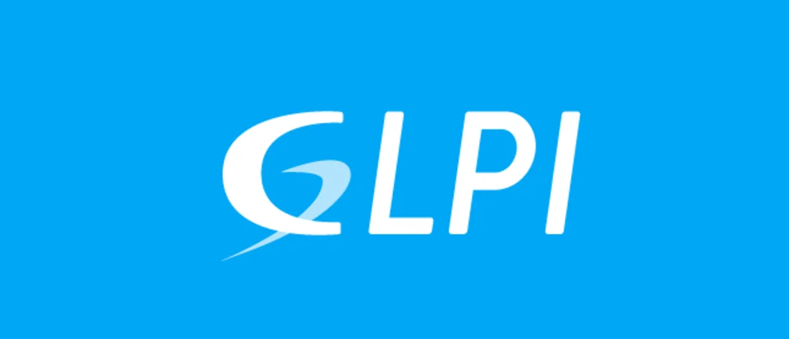

| Notions | Définitions | Image |
| Switch | Il contribue à la sécurité du réseau et à la protection des données échangées via le réseau. D'autre part, il permet de connecter davantage de postes de travail sur le même réseau Ethernet. Le switch permet avant tout de répartir l'information de manière « intelligente » au sein de l'entreprise. |  |
| ROUTER | Un routeur est un appareil permettant de créer un réseau Wi-Fi. Il doit pour cela être relié à un modem. Il envoie les informations provenant d'Internet à vos appareils personnels (ordinateurs, téléphones et tablettes). Ces appareils connectés à Internet chez vous constituent votre réseau local (LAN). |  |
| GLPI | GLPI est une application web qui aide les entreprises à gérer leur système d'information. Parmi ses caractéristiques, cette solution est capable de construire un inventaire de toutes les ressources de la société et de réaliser la gestion des tâches administratives et financières. |  |